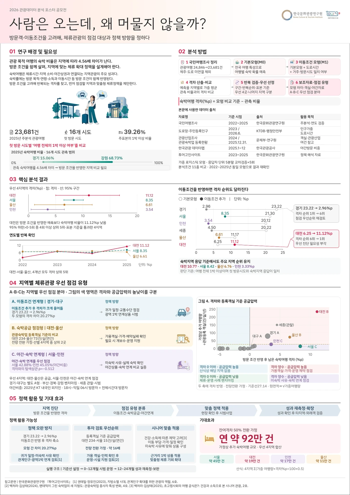
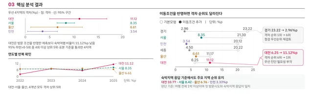
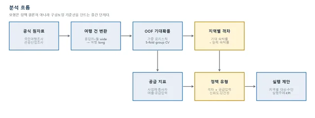
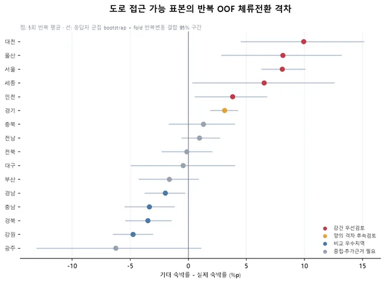
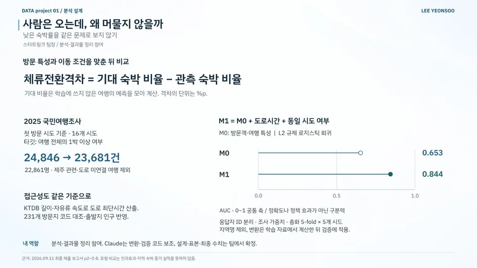
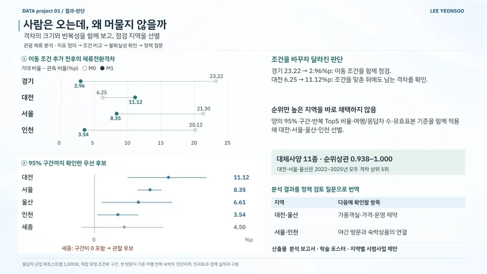

데이터 분석 / 공공·정책 / 관광
사람은 오는데, 왜 머물지 않을까?
Why Visitors Don't Stay — Tourism Stay-Conversion Gap
이동 조건을 고려한 관광 체류 격차 분석과 지역별 정책 과제 제안
현재 상태분석 보고서·포스터 제출
- 기간
- 2026.07–09 (1차 보고서 2026.07.13 · 수정보고서·포스터 2026.09.11 · 본선 2026.09.17)
- 팀
- 팀 스타트링크 (2인)
- 내 역할
- 팀장 · 데이터 분석·보고서·포스터
- 도구
- 수상
- 우수 우수상 · 한국문화관광연구원장상
2026 관광데이터 분석 포스터 공모전
내 기여팀장으로 데이터 수집과 기대 숙박 모형 분석·검증을 맡았습니다. 분석보고서·A0 포스터를 작성하고(팀원 의견 반영) 본선에서 약 2시간 포스터를 설명했습니다.
사진·화면


크게 보기
크게 보기포스터 '03 핵심 분석 결과' 확대출처팀 자료 
크게 보기분석 흐름: 원자료 → 여행 건 변환 → OOF 기대확률 → 지역별 격차 → 정책 유형출처팀 자료 
크게 보기시도별 반복 OOF 체류전환 격차와 95% 구간(1차 보고서 단계)출처팀 자료


발표 자료

크게 보기포트폴리오 슬라이드 5쪽 · 본문 내용을 한 장으로 정리한 슬라이드 
크게 보기포트폴리오 슬라이드 6쪽 · 본문 내용을 한 장으로 정리한 슬라이드


문제
숙박률만 비교하면 방문 목적과 이동 조건이 뒤섞입니다. 이 조건을 맞춘 뒤에도 남는 체류전환격차를 찾아 지역별 정책 과제를 제안했습니다.
접근
- 체류전환격차 = OOF 예측으로 구한 기대 숙박 비율 − 관측 숙박 비율(%p)
- 2025 국민여행조사 23,681건 분석(첫 방문 시도 기준·제주 관련 및 도로 미연결 여행 제외)
- KTDB 링크 길이·자유류 속도로 도로 최단시간 산출, 231개 방문지 코드 대조·출발지 인구 반영
- M0(방문객·여행 특성)와 M1(M0 + 도로시간 + 동일 시도 여부)을 L2 규제 로지스틱 회귀로 비교
- 응답자 분리·조사 가중치·층화 5-fold×5시드 적용, 군집 부트스트랩 1,000회로 모형 조건부 95% 구간 산출
핵심 판단
양의 95% 구간·반복 Top5 비율·표본 수·유효표본 기준을 함께 적용해 우선 점검 후보 선별
세종(4.50%p)은 95% 구간이 0을 포함해 우선 후보가 아닌 관찰 후보로 분리
지역명 변수를 모형에서 빼고, 변환은 학습 자료에서 계산한 뒤 검증에 적용
결과
- AUC (M0 → M1)0.653
에서 0.844 응답자 분리 교차검증 구분력 - 대전 체류전환격차6.25
에서 11.12%p 이동 조건을 맞춘 뒤에도 남는 격차 - 대체사양 순위상관0.938–1.000대체사양 11종
- 응답자 분리 교차검증 AUC 0.653(M0)→0.844(M1): 숙박 증가 효과가 아닌 구분력 변화
- 이동 조건 반영 후 체류전환격차: 경기 23.22→2.96%p, 대전 6.25→11.12%p
- 우선 점검 후보: 대전 11.12·서울 8.35·울산 6.61·인천 3.54%p
- 대체사양 11종 순위상관 0.938–1.000
- 대전·서울·울산은 2022–2025년 모두 체류전환격차 상위 5위
- 대전·울산의 객실·가격·운영 제약, 서울·인천의 야간 방문·숙박상품을 후속 정책 과제로 제안
- 분석 보고서·학술 포스터·지역별 시범사업 제안
AI 활용
데이터 변환·도로시간 계산·검증 코드 작성에 Claude를 활용했습니다.
한계와 다음 단계
첫 방문지 기준으로 여행 전체의 숙박을 진단했습니다. 모형 비교는 인과효과나 숙박 증가 실적이 아닙니다(AUC는 정확도가 아닌 구분력). 코드와 데모는 비공개입니다.